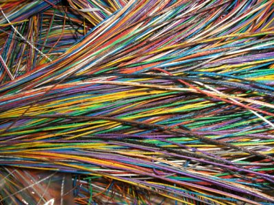

{
"published": true
}
At least 10-12 inches of snow are falling outside the window, and I spent the evening moving between various states of slipping in snow, to sliding in cars, to overheating indoors. And throughout these transitions of state, the term "rewiring" is flickering through my thoughts.
The venerable online etymological dictionary has an entry for "wire" that states,
Old English wir "metal drawn out into a fine thread," from Proto-Germanic wira- (source also of Old Norse viravirka "filigree work," Swedish vira "to twist," Old High German wiara "fine gold work"), from PIE wei- (1) "to turn, twist, plait" (source also of Old Irish fiar, Welsh gwyr "bent, crooked;" Latin viere "to bend, twist," viriæ "bracelets," of Celtic origin).
Like working glass from a rod to an ornate and beautiful capture of heat and time, these definitions suggest that modest wire is a tangible expression of effort, or, a platted braid of circumstance (think of hanging cords, twisted around from radiating vents or curious cats, turned into something resembling the industrious form of wire).
Wire is dangerous. Wire is necessary. And wire is precise. This is no hip-shooting, boat wrangling rope rodeo. No, wire is the conduit of the 21st century's most precision modes of communication, that by which the finest of movements are illicited from airplane rudders, and much more. Wire is a forgotten pillar of our modern infrastructure, with roots back to aesthetically pleasing arrangements of precious metals.
Rewiring, then, must be a reversal of some precise or circumstantial expression. At least temporarily to make way for a new pattern. Rewiring is slow. Rewiring is understanding potentially complex networks. And rewiring is permanent. It's rare that we rewire a house, pull out the old, install the new, and ever rerewire the house with the old. Sure, importantly, that network of old wire can be reused, repurposed, or revered, but it's unlikely it will ever power that same rotary dialer again.
And so, "rewiring" represents to me evolution. Irreversible change. Which isn't always a bad thing.